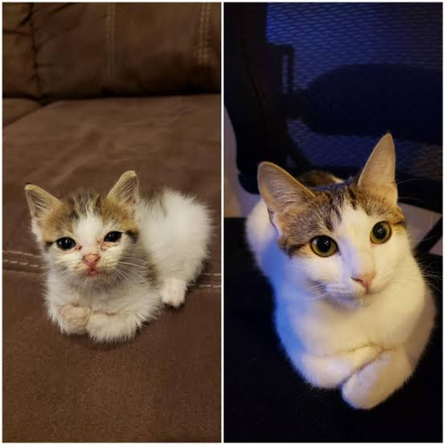
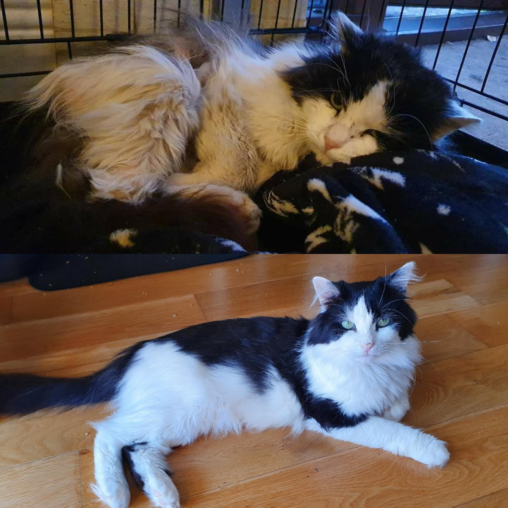

Luna

Luna is a friendly and loving cat who spent her life with an elderly lady. Sadly, her owner passed away, and now Luna is looking for a new family.
Meet the cats that are waiting for their forever homes!
Every cat has a different personality and story. Some are playful, while others are calm and enjoy spending time with people. Take a look at our cats and find your new friend!
Luna is a friendly and loving cat who spent her life with an elderly lady. Sadly, her owner passed away, and now Luna is looking for a new family.

Milo is a playful and energetic kitten who was found wandering around a busy park. He loves exploring, playing, and being around people.

Marino is a male cat who was rescued from the streets when he was just a little kitten. He needed some veterinary care, but now he is a sweet and loving 6-month-old cat who loves to cuddle. He has been waiting for a family that will love him as much as he loves people.

Starfish is a calm kitten whose mother showed up at someone's doorstep looking for a safe place. He was named after a starfish because he loves sleeping with his legs stretched out, just like one! He has been surrounded by love since he was little, which has made him a very sweet and affectionate cat. He loves relaxing in comfortable places and lying in the sun. Now, he is looking for a loving family to give him a forever home.
If you found a cat that you would like to adopt, visit our adoption page to learn about the process and requirements.